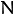
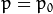
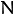
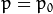

In this chapter,
- You will learn about Non-local Means Denoising algorithm to remove noise in the image.
- You will see different functions like cv2.fastNlMeansDenoising(), cv2.fastNlMeansDenoisingColored() etc.
In earlier chapters, we have seen many image smoothing techniques like Gaussian Blurring, Median Blurring etc and they were good to some extent in removing small quantities of noise. In those techniques, we took a small neighbourhood around a pixel and did some operations like gaussian weighted average, median of the values etc to replace the central element. In short, noise removal at a pixel was local to its neighbourhood.
There is a property of noise. Noise is generally considered to be a random variable with zero mean. Consider a noisy pixel, where is the true value of pixel and  is the noise in that pixel. You can take large number of same pixels (say ) from different images and computes their average. Ideally, you should get  since mean of noise is zero.
is the noise in that pixel. You can take large number of same pixels (say ) from different images and computes their average. Ideally, you should get  since mean of noise is zero.
You can verify it yourself by a simple setup. Hold a static camera to a certain location for a couple of seconds. This will give you plenty of frames, or a lot of images of the same scene. Then write a piece of code to find the average of all the frames in the video (This should be too simple for you now ). Compare the final result and first frame. You can see reduction in noise. Unfortunately this simple method is not robust to camera and scene motions. Also often there is only one noisy image available.
So idea is simple, we need a set of similar images to average out the noise. Consider a small window (say 5x5 window) in the image. Chance is large that the same patch may be somewhere else in the image. Sometimes in a small neigbourhood around it. What about using these similar patches together and find their average? For that particular window, that is fine. See an example image below:
The blue patches in the image looks the similar. Green patches looks similar. So we take a pixel, take small window around it, search for similar windows in the image, average all the windows and replace the pixel with the result we got. This method is Non-Local Means Denoising. It takes more time compared to blurring techniques we saw earlier, but its result is very good. More details and online demo can be found at first link in additional resources.
For color images, image is converted to CIELAB colorspace and then it separately denoise L and AB components.
OpenCV provides four variations of this technique.
Please visit first link in additional resources for more details on these parameters.
We will demonstrate 2 and 3 here. Rest is left for you.
As mentioned above it is used to remove noise from color images. (Noise is expected to be gaussian). See the example below:
import numpy as np
import cv2
from matplotlib import pyplot as plt
img = cv2.imread('die.png')
dst = cv2.fastNlMeansDenoisingColored(img,None,10,10,7,21)
plt.subplot(121),plt.imshow(img)
plt.subplot(122),plt.imshow(dst)
plt.show()
Below is a zoomed version of result. My input image has a gaussian noise of . See the result:
Now we will apply the same method to a video. The first argument is the list of noisy frames. Second argument imgToDenoiseIndex specifies which frame we need to denoise, for that we pass the index of frame in our input list. Third is the temporalWindowSize which specifies the number of nearby frames to be used for denoising. It should be odd. In that case, a total of temporalWindowSize frames are used where central frame is the frame to be denoised. For example, you passed a list of 5 frames as input. Let imgToDenoiseIndex = 2 and temporalWindowSize = 3. Then frame-1, frame-2 and frame-3 are used to denoise frame-2. Let’s see an example.
import numpy as np
import cv2
from matplotlib import pyplot as plt
cap = cv2.VideoCapture('vtest.avi')
# create a list of first 5 frames
img = [cap.read()[1] for i in xrange(5)]
# convert all to grayscale
gray = [cv2.cvtColor(i, cv2.COLOR_BGR2GRAY) for i in img]
# convert all to float64
gray = [np.float64(i) for i in gray]
# create a noise of variance 25
noise = np.random.randn(*gray[1].shape)*10
# Add this noise to images
noisy = [i+noise for i in gray]
# Convert back to uint8
noisy = [np.uint8(np.clip(i,0,255)) for i in noisy]
# Denoise 3rd frame considering all the 5 frames
dst = cv2.fastNlMeansDenoisingMulti(noisy, 2, 5, None, 4, 7, 35)
plt.subplot(131),plt.imshow(gray[2],'gray')
plt.subplot(132),plt.imshow(noisy[2],'gray')
plt.subplot(133),plt.imshow(dst,'gray')
plt.show()
Below image shows a zoomed version of the result we got:
It takes considerable amount of time for computation. In the result, first image is the original frame, second is the noisy one, third is the denoised image.